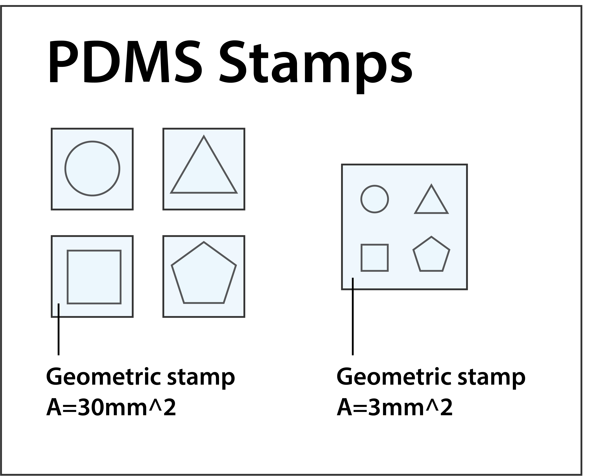
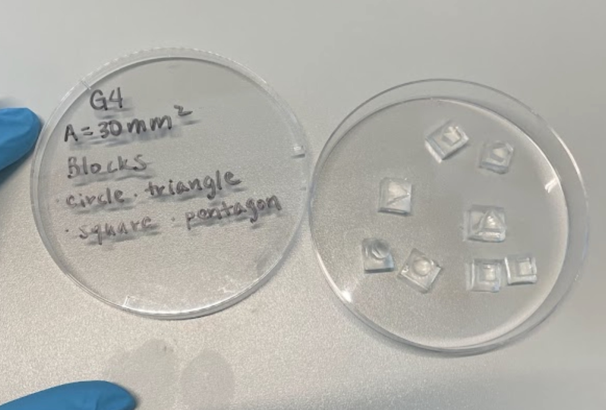
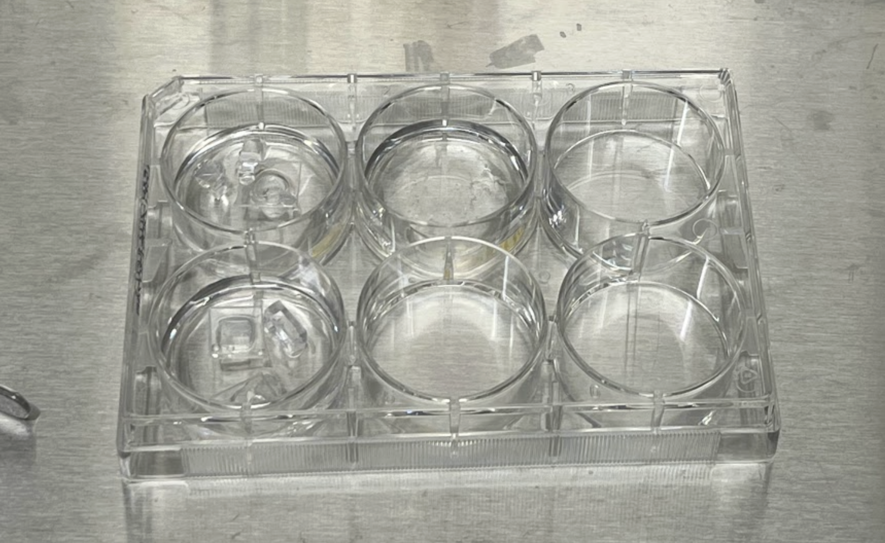
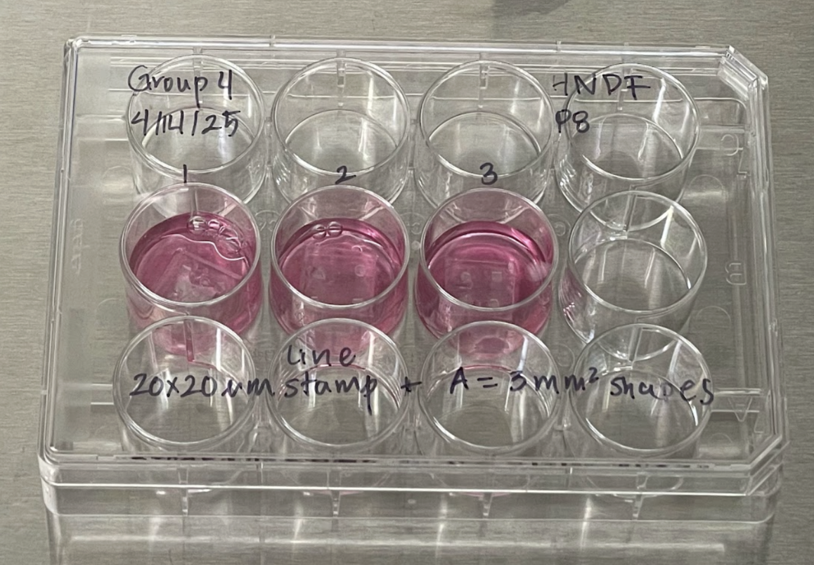

PROMPT
The final project tasked students with designing and executing an in vitro wound healing experiment to evaluate collective cell migration under controlled conditions. Specifically, the project asked which cell type—dermal fibroblasts or human umbilical vein endothelial cells (HUVECs)—closes a defined wound gap more rapidly, and whether the initial organization of the cell monolayer (isotropic versus anisotropic) influences closure dynamics. Experiments were required to control for cell seeding density, spatial geometry, and time, with migration quantified using time-lapse microscopy and appropriate image-based analysis.
ABSTRACT
The final project examined collective gap closure behavior in human normal dermal fibroblasts (HNDFs) and human umbilical vein endothelial cells (HUVECs). We hypothesized that differences in cell morphology and cytoskeletal organization would lead to distinct migration dynamics, and that gaps with higher curvature would close more rapidly due to increased edge-driven migration forces. To test these hypotheses, we engineered substrates with well-defined gap geometries and alignment cues. Custom PDMS stamps were used to create circular, square, and triangular gaps, all with equal surface areas (30 mm²), allowing geometry to be varied independently of gap size. Substrates were prepared with both isotropic and anisotropic fibronectin patterns to examine how alignment influences collective migration.
EXPERIMENTAL METHODS
To investigate collective cell migration during gap closure under controlled geometric and alignment conditions, a multi-step experimental workflow was implemented combining custom PDMS mold fabrication, substrate patterning, controlled cell seeding, and time-lapse imaging.

PDMS MOLD AND STAMP FABRICATION
Custom molds defining gap geometries were designed using CAD software and fabricated via resin 3D printing. Printed molds were post-cured and allowed to dry overnight before being submerged in Milli-Q water for 2 hours to remove residual resin. The molds were then baked at 85 °C overnight, followed by repeated cleaning with detergent and a brush to ensure complete removal of contaminants. After drying, a thin layer of mold release agent was applied to facilitate PDMS demolding.

Polydimethylsiloxane (PDMS) was prepared and poured into the molds, degassed under vacuum for approximately 2 hours to remove trapped air bubbles, and cured at 65 °C for 24 hours. Once fully cured, PDMS stamps defining circular, square, and triangular gaps were carefully excised from the molds using a razor blade.

SUBSTRATE PREPARATION AND PROTEIN PATTERNING
To create micropatterned substrates for cell culture, PDMS stamps were used to transfer fibronectin onto glass coverslips. Stamps were sonicated and treated with UV ozone to ensure surface cleanliness, while coverslips were also UVO-treated to promote protein adsorption. Fibronectin was incubated on the stamps for 1 hour before being applied to the coverslips to generate anisotropic alignment patterns. For isotropic substrates, fibronectin was directly deposited onto UVO-treated coverslips.
To create defined gap geometries, PDMS stamps were blocked with Pluronic F-127 to prevent protein adsorption within the gap regions. The stamps were then placed onto the coverslips, which were briefly aspirated to ensure conformal contact. Substrates were incubated for approximately 15 minutes to allow equilibration to physiological temperature prior to cell seeding.
Prior to use, PDMS stamps were sonicated for 30 minutes to remove surface debris. Stamps attached to petri dish slabs were additionally treated with UV ozone (UVO) to enhance surface cleanliness. Line-patterned stamps were incubated with fibronectin for 1 hour, while glass coverslips were UVO-treated for 8 minutes to promote protein adsorption.
All materials were transferred to a biosafety cabinet to maintain sterility. Fibronectin-coated stamps were applied to designated coverslips to generate anisotropic alignment patterns, while fibronectin was directly deposited onto remaining coverslips to create isotropic substrates. After protein transfer, excess fibronectin was removed and substrates were rinsed 2-3 times with phosphate-buffered saline (PBS).
For geometric gap formation, PDMS stamps were first blocked with Pluronic F-127 for 5 minutes and rinsed thoroughly with PBS to prevent protein adsorption within the gap regions. The stamps were then carefully placed onto the coverslips, which were briefly aspirated to ensure conformal contact. Substrates were incubated for approximately 15 minutes to allow equilibration to physiological temperature prior to cell seeding.

CELL SEEDING AND CULTURE
Human normal dermal fibroblasts (HNDFs) and human umbilical vein endothelial cells (HUVECs) were trypsinized, resuspended, and counted prior to seeding. Approximately 500,000 cells per well were seeded onto each patterned substrate in ~2 mL of culture media to ensure uniform monolayer formation. Cells were allowed to adhere and spread for 24 hours, after which PDMS stamps were removed to reveal defined gap geometries.
IMAGING AND ANALYSIS
Gap closure dynamics were monitored using time-lapse microscopy over a 72-hour period. Continuous imaging was performed to capture collective migration behavior under each experimental condition. In select experiments, cells were fixed and immunostained to visualize cytoskeletal organization and cell-cell junctions. Migration was quantified by measuring gap closure over time, enabling comparison across cell types, substrate anisotropy, and geometric curvature.

RESULTS & DISCUSSION
Gap closure was monitored over a 72-hour period using time-lapse microscopy. Across all conditions, both geometry and substrate alignment significantly influenced migration dynamics. Contrary to our initial hypothesis, HUVECs consistently closed gaps faster than HNDFs, despite the elongated morphology and stress fiber organization of fibroblasts.
Isotropic substrates and sharp-curvature geometries produced the highest migration rates, while anisotropic alignment constrained lateral motion and slowed closure. These findings demonstrate that cell identity, curvature, and alignment cues collectively regulate wound closure behavior, highlighting the importance of physical microenvironment design in cell engineering studies.
CONCLUSION
Immunofluorescent microscopy revealed distinct cellular responses to different geometric and anisotropic constraints. Cells confined to linear patterns exhibited elongated, aligned morphologies, while cells on isotropic shapes displayed more symmetric spreading. These observations confirmed that micropatterned substrates effectively impose physical cues that influence cytoskeletal organization and migration behavior.
By combining engineered substrates with controlled gap geometries and alignment cues, this project demonstrates how cell engineering approaches can be used to systematically study collective migration and wound closure dynamics. The results emphasize that biological behavior cannot be separated from physical context, and that careful engineering of the cellular microenvironment is essential for uncovering mechanistic insight into tissue-level processes.
TISSUE CULTURE TECHNIQUES
Throughout the course, we gained hands-on experience with fundamental tissue culture and cell engineering techniques, primarily working with HNDFs and HUVECs. Our team was responsible for maintaining both cell lines throughout the semester, including passaging, monitoring confluency, and preparing cells for experiments.


Additional techniques developed during the course included microcontact printing, PDMS handling, immunofluorescent staining, and high-resolution microscopy. Together, these methods enabled the design and execution of controlled experiments probing how engineered physical environments influence collective cell behavior.
WOUND HEALING ASSAY
As an initial benchmark, we performed a standard wound healing (scratch) assay experiment using both HNDFs and HUVECs. Cells were grown to full confluency before a linear scratch was introduced to create a cell-free gap. Migration into the gap was imaged over three days at 40× magnification.


SUBSTRATE AND STAMP FABRICATION
To enable micropatterned cell culture, polydimethylsiloxane (PDMS) substrates and stamps were fabricated using soft lithography techniques. Desired geometries were first defined on a silicon master wafer in the cleanroom, which served as the mold for subsequent PDMS casting. This process produced both compliant culture substrates and reusable stamps for microcontact printing.

Process Steps:
1. Master Wafer Preparation
Desired geometric patterns were etched onto a 3-inch silicon wafer using standard cleanroom fabrication techniques. The patterned wafer was cleaned with isopropanol and dried with nitrogen to remove surface contaminants prior to PDMS casting.
2. PDMS Preparation
PDMS base and curing agent were mixed thoroughly at a 10:1 ratio to ensure uniform crosslinking. The mixture was degassed under vacuum to remove trapped air bubbles that could compromise pattern fidelity during molding.
3. Stamp Casting
Degassed PDMS was poured directly over the patterned silicon wafer to form the PDMS stamps. Care was taken to fully cover the patterned features and achieve uniform thickness across the mold.
4. Substrate Coating
In parallel, the same PDMS mixture was spin-coated onto clean glass coverslips to create thin, compliant PDMS-coated substrates suitable for cell culture. Spin-coating ensured a uniform PDMS layer while preserving optical transparency for subsequent imaging.
5. Curing
Both the PDMS stamps and PDMS-coated coverslips were cured overnight at 65°C, allowing complete polymer crosslinking and mechanical stabilization of the features.
6. Device Release and Trimming
After curing, PDMS stamps were carefully peeled from the silicon master wafer and trimmed to size. Individual stamps were then paired with their corresponding PDMS-coated substrates to ensure proper alignment during pattern transfer.

7. Pattern Validation Fluorescent BSA–FITC dye tests were performed to verify stamp integrity, feature resolution, and transfer fidelity. Successful pattern transfer was confirmed for multiple single-cell geometries (square, triangle, and circle) as well as line features of varying widths.


MICROPATTERNING AND CELL SEEDING
Microcontact printing was used to define adhesive protein patterns on compliant PDMS substrates, enabling precise control over cell shape, alignment, and spatial organization. This process established the physical constraints required for both single-cell and collective migration experiments.


Process Steps:
1. Stamp Inking
Validated PDMS stamps were incubated with a fibronectin solution to coat the raised features with adhesive protein. Excess solution was removed and the stamps were gently dried to ensure uniform protein coverage without flooding the patterned features.
2. Protein Transfer
The inked stamps were brought into conformal contact with PDMS-coated glass coverslips and lightly pressed to transfer the fibronectin pattern onto the substrate surface. Care was taken to maintain consistent contact pressure and alignment during stamping.
3. Surface Passivation
Following protein transfer, non-patterned regions of the substrate were treated with Pluronic F-127 to passivate the surface and prevent nonspecific cell adhesion outside the patterned areas. This step ensured that cells adhered exclusively to the intended fibronectin geometries.
4. Cell Seeding
Cells were seeded onto the patterned substrates at a controlled density and allowed to settle and attach under standard culture conditions. Seeding density was chosen to promote uniform coverage of the patterned regions while minimizing cell overlap.
5. Adhesion and Spreading
Seeded cells were allowed to adhere and spread on the patterned substrates for 24 hours prior to imaging or further experimentation. This incubation period ensured stable attachment and cytoskeletal organization within the imposed geometric constraints.
ACKNOWLEDGEMENTS
This work was completed as part of the Harvard Active Learning Lab. I would like to thank Professor Kevin Kit Parker and the course staff for their guidance and support, including Dr. Melissa Hancock and Avery Normandin. I also thank the teaching fellows, Dr. Yongjun Jang and Kevin Shani, for their instruction and feedback. Finally, I am grateful to my lab partner, Anna Clouvel, for her collaboration throughout this project.